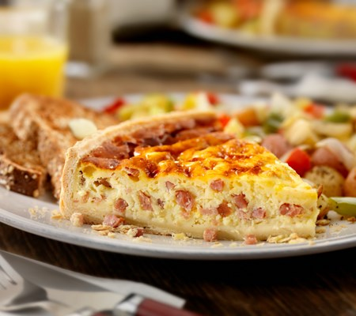

Quiche Lorraine

Classic comfort dish from the Lorraine Region of France.
Originally, the dish was made with eggs, cream, and lardons.
In English-speaking countries, the lardons were substituted with bacon.
Ingredients
- 6 to 8 pieces thick-sliced bacon
- An 8-inch partially cooked pate brisee placed on a buttered baking sheet
- 3 large eggs
- 1 1/4 to 1 1/2 cups heavy cream
- 1/4 teaspoon salt
- Pinch of pepper and nutmeg
- 1 tablespoon butter
Instructions
Serves 4 to 6
- Preheat Oven to 375 degrees.
- Slice bacon into 1/4 inch pieces and brown lightly in a frying pan.
Drain and spread in bottom of blind-baked pate brisee.
Beat eggs, cream, and seasonings in a bowl to blend.
- Just before baking, pour cream mixture into the shell, filling to within 1/8 inch of the top.
Cut butter into bits and distribute over the cream.
- Bake in upper third of oven for 25 to 30 minutes, until quiche has puffed and browned, and a small knife, plunged into custard, comes out clean.
Serve hot, warm, or cold; quiche will sink slightly as it cools.